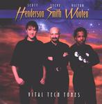

Home Artist links Label link

Henderson/Smith/Wooten - Vital Techtones
| Artist: | Henderson/Smith/Wooten |
| Title: | Vital Techtones |
| Label: | Tone Center TC40002 |
| Length(s): | 60 minutes |
| Year(s) of release: | 1998/2002 |
| Month of review: | [05/2002] |
Line up
Victor Wooten - bass
Scott Henderson - guitar
Steve Smith - drums
Tracks
| 1) | Crash Course | 7.00
|
| 2) | Snake Soda | 5.35
|
| 3) | Dr. Hee | 8.55
|
| 4) | Everglades | 9.39
|
| 5) | Two For One | 5.22
|
| 6) | King Twang | 4.09
|
| 7) | The Captors | 7.51
|
| 8) | Giant Steps | 5.44
|
| 9) | Lie Detector | 5.49
|
Summary
Already reviewed on these pages was VTT2, by Vital Tech Tones, but now
also the first of the two is reviewed, still released under the name of
the participators.
The music
Crash Course immediately shows an active, vital, Tech Tones. The music is
of course pure jazzrock with a rest in the music after the plodding opening.
The drums are played in subtle fashion (Steve Smith really has a good and
versatile sound, and boy is he busy playing these days), the guitar somewhat
on the dissonant side, the bass of Wooten plainly audible. In the part
where the solo's are, the guitar is fast, wailing high, the drums are really
busy and the bass continues its unstoppable march, through the composition.
On Snake Soda we have more groove but also more fiddling around. The drums sound
great again, plainly audible, while the characteristic thing about
Henderson's guitar playing is that it is NOT slick. Wooten gets his minute
in the sun for a bass solo. Dr. Hee continues the bouncy approach, but is
for progminded people a bit too simple melodically and also in terms
of variation. Later it gets hectic with a manic guitar, but strangely enough,
the gait of the song is still easy-going. The final part is typical
improvised American jazzrock.
On Everglades I continue to find the music less than appealing. Again, the same
things over and over. A rather fickle track this one, with a straightforward
melody and too little raw power to compensate for it. Too bad. A bit more
dynamics would be nice. They did this better on the second record.
The stop start approach to instrumental songs I never did like, and we have some
here on Two For One.
In King Twang, at last, the band rages on in a good way. The style is in a way
what I would describe as typically American, a kind of variant on
Southern rock. The music continues to more jam/improvised like and less
"composed". Maybe, that is my problem.
The Captors is totally different. Here we start with soundtrack/soundscapes.
The discordant guitar zooms its way through on this cosmic beginning.
Then the sound becomes louder, a bit like blaring. Weird, but I like it.
The jazz is more felt on Giant Steps, a song by Coltrane. The drums are
typical jazz drums here: tick-tick-tick. Lie Detector is at times
an attack on the nerves. Not for the faint of heart this one with many estranging
effects.
Conclusion
Although I like it when the band tries to uncover new territory instead
of sticking to jazzrocks and jams, they do too much on this one too
please me. I have to admit being more partial to VTT2.
© Jurriaan Hage